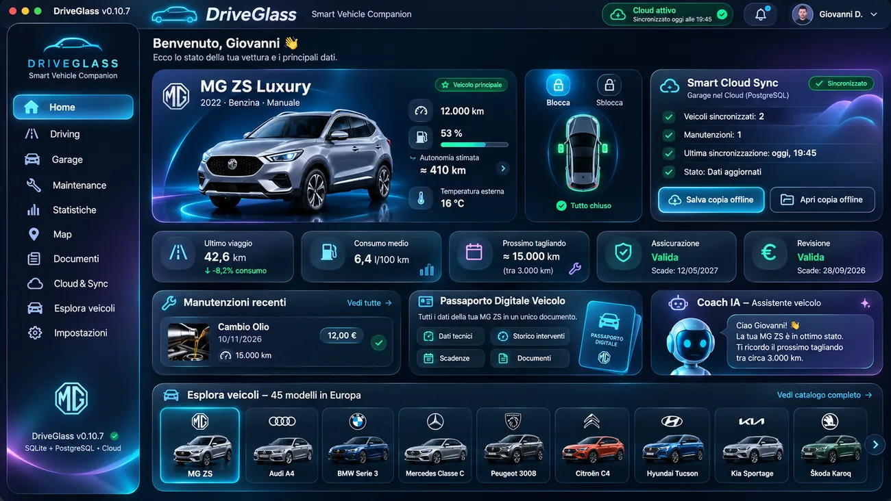

VISIONE UI · WORK IN PROGRESSFLUTTER · DART · SQLITE · DEMO VERIFICATA
DriveGlass — Smart Vehicle Companion
Garage digitale per veicoli, manutenzioni e documenti. Guarda una registrazione reale dell’app Flutter su Mac e la prova documentale di esportazione del Passaporto digitale PDF. Cloud e telemetria restano in sviluppo; il codice dell’app è privato.
Video Full HDPassaporto PDFGarage locale